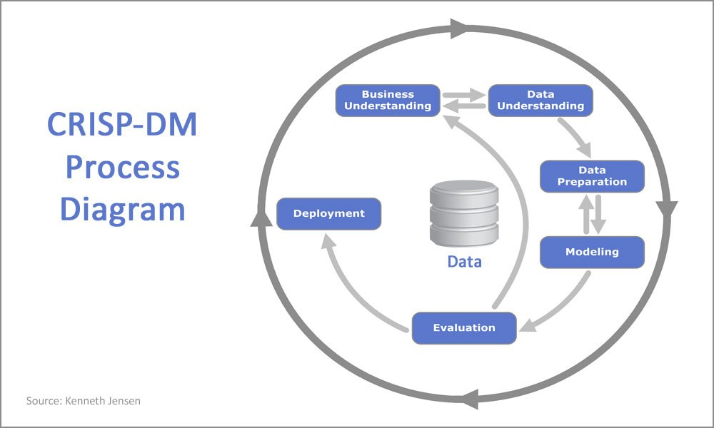

Proyek DAMI 2021
Market Basket Analysis in Book Recommendation Based on Age
Metode yang akan diterapkan pada proyek ini adalah model CRISP-DM
untuk melakukan proses analisis dari suatu industri sebagai strategi pemecahan masalah dari suatu bisnis atau penelitian dengan memanfaatkan penambangan data. Secara umum, terdapat enam fase dalam CRISP-DM yang akan dijabarkan sebagai berikut .

Tahap awal yang berfokus pada pemahaman tujuan dan kebutuhan proyek dari perspektif bisnis,
kemudian mengubah pengetahuan ini menjadi definisi masalah pada data mining dan akan ditentukan rencana atau strategi awal yang dirancang untuk mencapai tujuan.
Tahap ini dimulai dengan pengumpulan data yang kemudian akan dilanjutkan dengan proses untuk mendapatkan pemahaman yang mendalam tentang data,
mengidentifikasi masalah kualitas data, hingga menemukan wawasan pertama kedalam data atau untuk mendeteksi adanya bagian yang menarik dari data yang dapat digunakan untuk membentuk hipotesa pada informasi yang tersembunyi.
Dataset di ambil dari Kaggle.com.
Tahap ini mencakup semua kegiatan untuk membangun dataset akhir (data yang akan diproses pada tahap pemodelan) dari data mentah. Tahap data preparation ini cenderung dilakukan beberapa kali dan tidak dalam urutan yang ditentukan.
Pada tahap ini juga mencakup pemilihan tabel, record, dan atribut-atribut data, termasuk proses pembersihan dan transformasi data untuk kemudian dijadikan masukan dalam tahap pemodelan.
Tahap ini akan dilakukan pemilihan dan penerapan berbagai teknik pemodelan dan beberapa parameternya akan disesuaikan untuk mendapatkan nilai yang optimal.
Biasanya, ada beberapa teknik berbeda yang dapat diterapkan untuk masalah data mining yang sama. Oleh karena itu, pada tahap ini masih kemungkinan kembali ke tahap sebelumnya
Pada tahap ini, model sudah terbentuk dan diharapkan memiliki kualitas baik jika dilihat dari perspektif analisis data. Sebelum melanjutkan ke penerapan akhir dari model, penting untuk dilakukan evaluasi terhadap keefektifan dan kualitas model secara menyeluruh dan meninjau langkah-langkah yang dilakukan untuk membangun model dalam memastikan apakah model dapat mencapai tujuan yang ditetapkan pada fase awal (Business Understanding) dengan benar.
Tujuan utama dari tahap ini adalah menentukan apakah ada masalah bisnis yang belum cukup dipertimbangkan. Pada akhir dari tahap ini, ditentukan penggunaan hasil proses data mining yang harus tercapai.